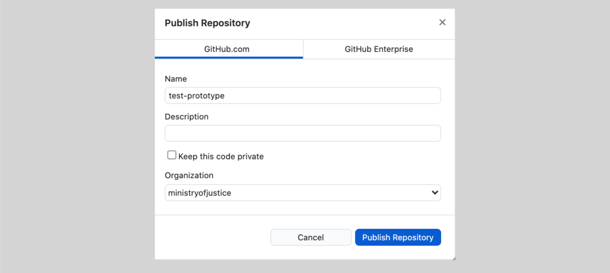

Upload your prototype to GitHub

If you're using GitHub Desktop:
-
Select Publish Repository.
-
Untick Keep this code private, as we need others to be able to collaborate on it.
-
Choose ministryofjustice for Organisation.
-
Select Publish Repository.
Your prototype code is now on GitHub, which means you can publish your prototype on the web using the MOJ Cloud Platform service.